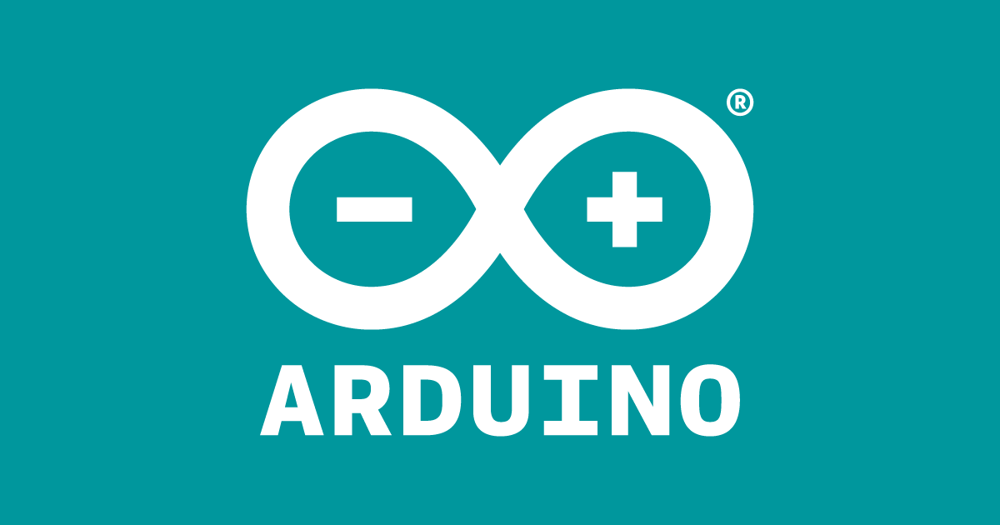

Paso 1
Tendremos que tener el codigo que va a usar el coche configurado y listo para ser ejecutado,
una vez que lo tenemos necesitamos por ejemplo un portatil para poder ejecutar el codigo.
Paso 2
Una vez tenemos el portatil lo encendemos y abrimos el programa de Arduino IDE

Paso 3
Una vez que tenemos el programa abierto lo que tenemos que hacer es subir el codigo.
Cuando ya tenemos el codigo subido, le damos a verificar para ver si hay algun problema o es valido.
Paso 4
Cuando ya tenemos el codigo comprobado y listo para ejecutar, tendremos que tener el coche conectado al portatil y subiremos el codigo.
Una vez hemos hecho esto, el coche deberia de funcionar.